| Scan | Motor | C1 | C2 | C3 | #Pnts | Sample | Ana | #neutr |
|---|---|---|---|---|---|---|---|---|
| 1 | OMM | - | - | - | 41 | - | - | 1E5 |
| 2_1 | OMM | 15 | - | - | 41 | - | - | 1E5 |
| 2_2 | OMM | 30 | - | - | 41 | - | - | 1E5 |
| 3_1 | 2T | 15 | - | - | 41 | Slit 1mm | - | 1E5 |
| 3_2 | 2T | 30 | - | - | 41 | Slit 1mm | - | 1E5 |
| 4_1 | 2T | 15 | - | 30 | 41 | Slit 1mm | - | 1E5 |
| 4_2 | 2T | 30 | - | 30 | 41 | Slit 1mm | - | 1E5 |
| 5_1 | 2T | 15 | 28 | 30 | 41 | Slit 1mm | - | 1E5 |
| 5_2 | 2T | 30 | 28 | 30 | 41 | Slit 1mm | - | 1E5 |
| 6_1 | 2T | 15 | 28 | 30 | 41 | Al2O3 (foc) | - | 1E5 |
| 6_2 | 2T | 30 | 28 | 30 | 41 | Al2O3 (foc) | - | 1E5 |
| 7_1 | 2T | 15 | 28 | 30 | 41 | Al2O3 (defoc) | - | 1E5 |
| 7_2 | 2T | 30 | 28 | 30 | 41 | Al2O3 (defoc) | - | 1E5 |
| 8_1 | - | 15 | 28 | 30 | 1 | Vanadium | - | 1E7 |
| 8_2 | - | 30 | 28 | 30 | 1 | Vanadium | - | 1E7 |
| 9_1 | OMA | 15 | 28 | 30 | 21 | Vanadium | 5meV | 5e7 |
| 11_1 | 2T | 30 | 28 | 30 | 41 | Al2O3 | 5meV | 1E5 |
| 11_2 | 2T | 60 | 62 | 67 | 41 | Al2O3 | 5meV | 1E5 |
OMM scan with no collimation. Slit 10x20mm between monochromator and detector. 41 points with 1E5 neutrons/point.
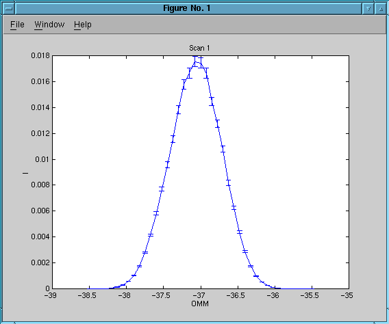
OMM scan with 15' collimation. Slit 10x20mm between monochromator and detector. 41 points with 1E5 neutrons/point.
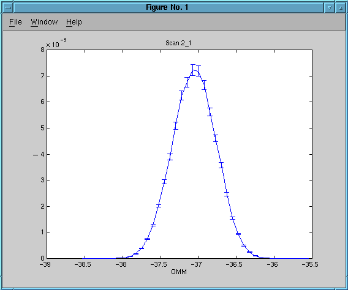
OMM scan with 30' collimation. Slit 10x20mm between monochromator and detector. 41 points with 1E5 neutrons/point.
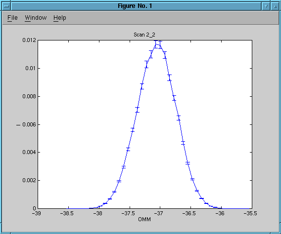
2T scan with 15' M-S, open S-A and A-D collimation. Slit 1x40mm on sample position. 41 points with 1E5 neutrons/point.
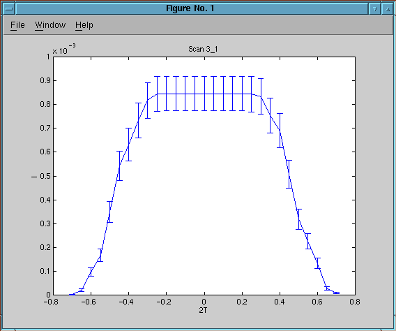
2T scan with 30' M-S, open S-A and A-D collimation. Slit 1x40mm on sample position. 41 points with 1E5 neutrons/point.
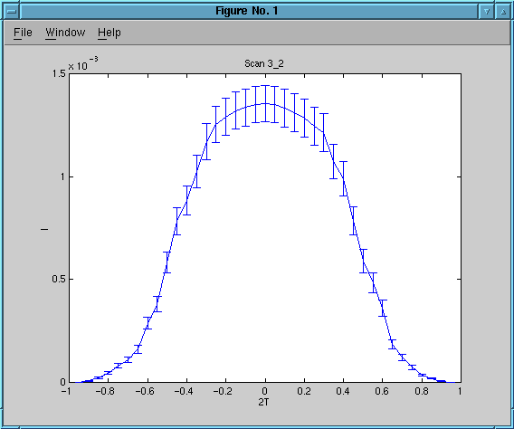
2T scan with 15' M-S, open S-A, 30' A-D collimation. Slit 1x40mm on sample position. 41 points with 1E5 neutrons/point.
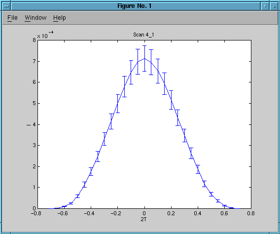
2T scan with 30' M-S, open S-A, 30' A-D collimation. Slit 1x40mm on sample position. 41 points with 1E5 neutrons/point.
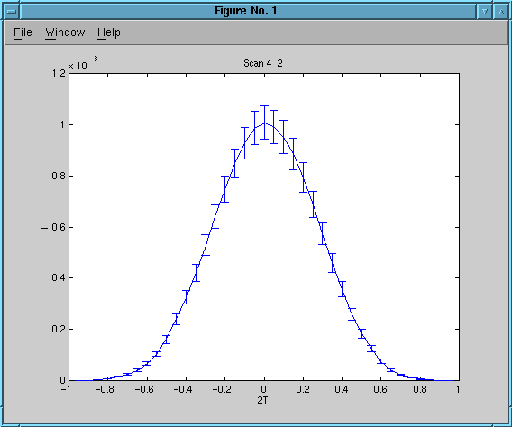
2T scan with 15' M-S, 28' S-A, 30' A-D collimation. Slit 1x40mm on sample position. 41 points with 1E5 neutrons/point.
2T scan with 30' M-S, 28' S-A, 30' A-D collimation. Slit 1x40mm on sample position. 41 points with 1E5 neutrons/point.
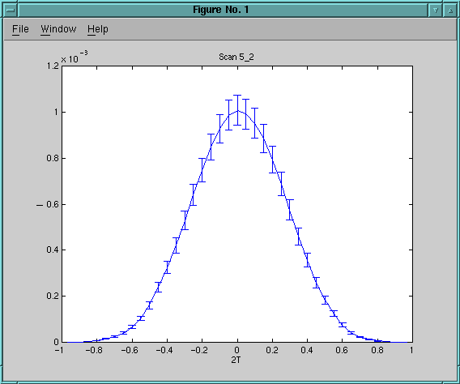
2T scan in focusing mode with 15' M-S, 28' S-A, 30' A-D collimation. Al2O3 on sample position. 41 points with 1E5 neutrons/point.
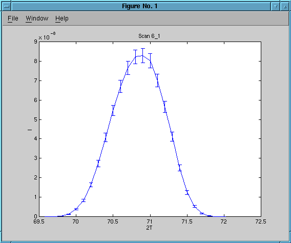
2T scan in focusing mode with 30' M-S, 28' S-A, 30' A-D collimation. Al2O3 on sample position. 41 points with 1E5 neutrons/point.
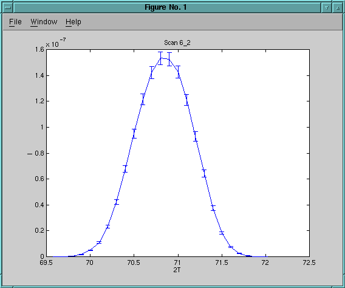
2T scan in defocusing mode with 15' M-S, 28' S-A, 30' A-D collimation. Al2O3 on sample position. 41 points with 1E5 neutrons/point.
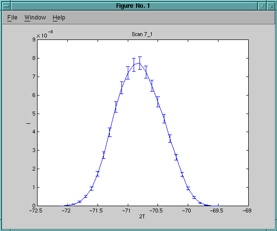
2T scan in defocusing mode with 30' M-S, 28' S-A, 30' A-D collimation. Al2O3 on sample position. 41 points with 1E5 neutrons/point.
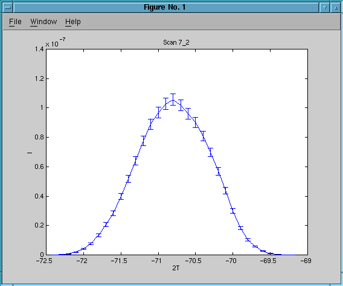
15' M-S, 28' S-A, 30' A-D collimation. Vanadium on
sample position. Single point with 1E7 neutrons. Measured intensity
3.69943e-07 +/- 1.849715e-07.
Scan 8_2: Single point measurement on vanadium, 30' M-S collimation
30' M-S, 28' S-A, 30' A-D collimation. Vanadium on
sample position. Single point with 1E7 neutrons. Measured intensity
8.62869e-07 +/- 2.87623e-07
Scan 9_1: OMA scan on vanadium, 15' M-S collimation
OMA scan with 15' M-S, 28' S-A, 30' A-D collimation. Vanadium on sample position. 2T = 70.8 corresponding to Q about 1.8049. Analysator set to 2TA = 74 (5meV). 21 points with 5E7 neutrons/point.
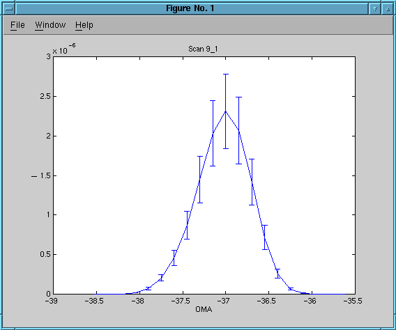
2T scan with 30' M-S, 28' S-A, 30' A-D collimation. Al2O3 on sample position. Analysator set to 2TA = 74 (5meV). 41 points with 1E5 neutrons/point.
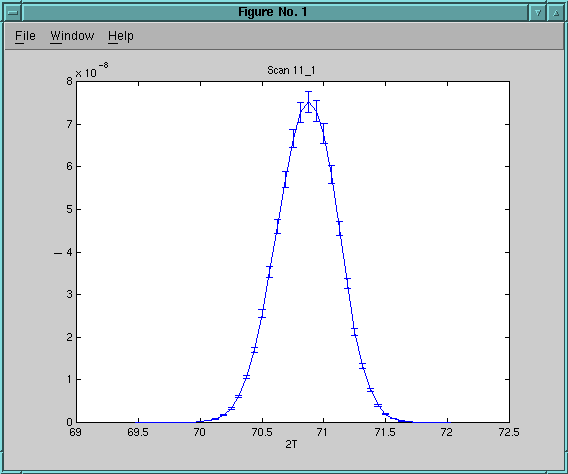
2T scan with 60' M-S, 62' S-A, 67' A-D collimation. Al2O3 on sample position. Analysator set to 2TA = 74 (5meV). 41 points with 1E5 neutrons/point.
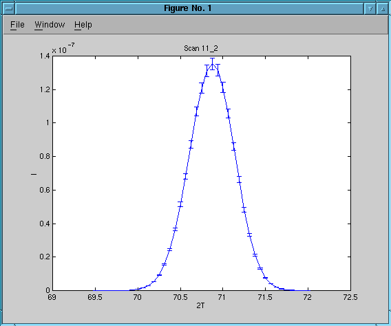